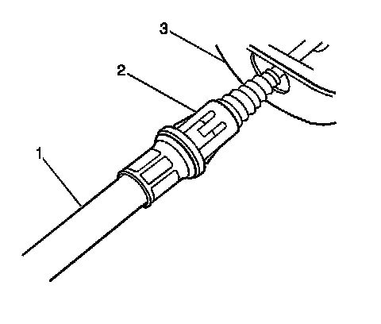
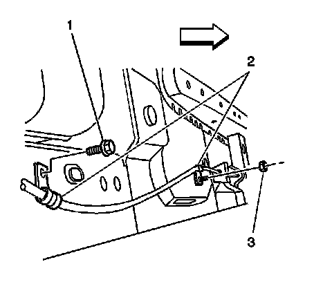

Park Brake Intermediate Cable Replacement
Parking Brake Intermediate Cable Replacement
Tools Required
J 37043 Parking Brake Cable Release Tool
Removal Procedure
1. Ensure that the park brake is fully released.

2. Raise the vehicle and support. Refer to Lifting and Jacking the Vehicle (Service and Repair) .
3. Pull down on the intermediate park brake cable (2) near the park brake connector (1).
4. Remove the intermediate park brake cable (2) from the park brake cable connector (1).

5. Use the J 37043 in order to depress the locking retainer (2) of the intermediate park brake cable housing (1).
6. Remove the intermediate park brake cable from the floor pan bracket (3).

7. Remove the park brake cable guide nut (3) from the mounting stud.
8. Remove the park brake cable guide bolt (1) from the floor pan.
9. Remove the park cable guides (2).

10. Disconnect the intermediate cable (2) from the rear equalizer (3).
11. Disconnect the intermediate cable (2) from the right rear park brake cable connector (1).
12. Disconnect the intermediate cable housing from the rear cable housing retaining bracket by depressing the locking retainer.
13. Remove the intermediate cable from the vehicle.
Installation Procedure
1. Route and install the intermediate park brake cable into park brake cable retaining bracket.
2. Properly seat the intermediate park cable into the park brake cable retaining bracket.
3. Connect the right rear parking brake cable connector (1) to the intermediate park brake cable (2).
4. Connect the intermediate park brake cable (2) to the equalizer (3).
5. Install the park cable guides (2).
Notice: Refer to Fastener Notice (Fastener Notice) .
6. Install the park brake cable guide bolt (1) to the floor pan.
Tighten the bolt to 10 N.m (89 lb in).
7. Install the park brake cable guide nut (3) to the mounting stud.
Tighten the nut to 10 N.m (89 lb in).
8. Connect intermediate park brake cable housing (1) to the floor pan bracket (3).
9. Properly seat the intermediate park brake cable housing retainer to the floor pan.
10. Insert the intermediate park brake cable (2) into the cable retaining bracket and lock the intermediate park brake cable into place.
11. Connect the front of the intermediate park brake cable (2) to the park brake cable connector (1).
12. Lower the vehicle.
13. To ensure that the park brake cable retainers are seated, cycle the park brake pedal 1 to 2 times.